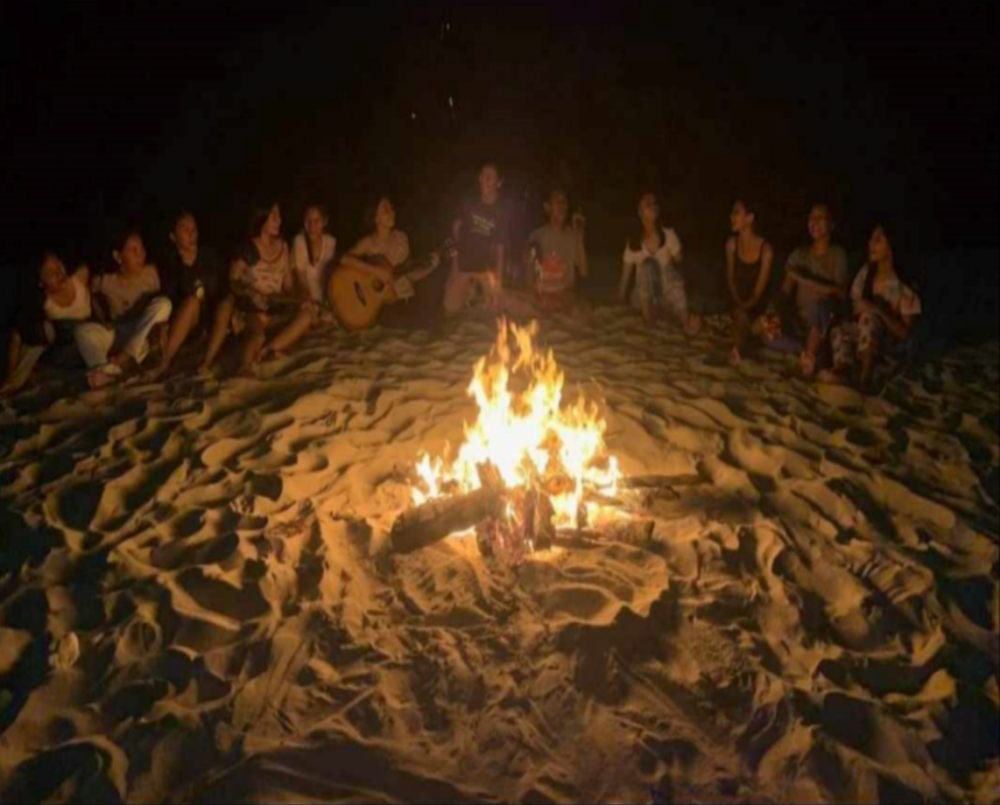

Activities
-
Panacalan Island is a hidden gem that offers a delightful array of activities for every type of traveler. With its pristine beaches and stunning turquoise waters, it's the perfect destination for those seeking adventure and relaxation alike. You can dive into the inviting sea for a refreshing swim, bask in the sun on soft sandy shores, or engage in spirited games of beach volleyball under the stars. As day transitions to night, the island transforms into a vibrant social hub with bonfire parties and breathtaking sunsets that paint the sky in hues of orange and pink, creating unforgettable memories against a picturesque backdrop.
 Swimming in turquoise waters
Swimming in turquoise waters
- Watching Sunset
-  Bonfire Party
-
 Late Night Beach Volleyball
Late Night Beach Volleyball
-
 Sunbathing and relaxing
Sunbathing and relaxing
Whether you're splashing in the crystal-clear waters, soaking up the sun, or enjoying lively evenings filled with laughter and camaraderie, Panacalan Island promises an unforgettable escape. The combination of tranquil relaxation and exciting activities makes it an ideal getaway for friends, families, or couples looking to reconnect with nature and each other. As you leave the island, the memories of sun-drenched days and starry nights will linger, inviting you to return to this enchanting paradise time and time again..